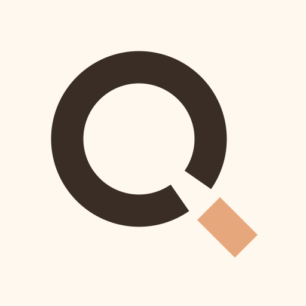
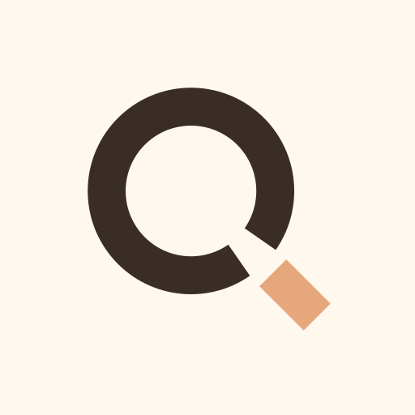

The short detached block can read as punctuation or a locator point.
Logo refinement / R2
Q Path, one route forward
selected-concept/refinement-candidate
01 / R1 → R2
The open circuit is unchanged. Only the detached R1 square becomes a longer, aligned route segment across the same deliberate cut.
A 45° continuation now carries direction, length, and the same stroke weight.
02 / Color & monochrome
Meaning stays in geometry. Apricot identifies the exit in one application; the one-color mark loses no information.
Canonical / cocoa
Reversed / white
Two-color application
Monochrome proof
03 / Exact-size behavior
All samples render at the labeled CSS pixel dimensions. Butt terminals keep the interruption crisp without a tiny disconnected residue.
16px
32px
40px
44px
180px
192px
512px
04 / Product contexts
The candidate holds its Q reading in compact navigation, a cream header, and the dark owner surface.
Header / cream / 44pxBarber Queue
Favicon / browser tab / 16px
Queue status · Today
05 / Apple, PWA & maskable
Warm cream is full bleed in the source. Platform rounding is simulated here; the dashed overlay marks the maskable central 80% safe zone.
Apple / 180px

PWA / 192px
Maskable / 512px / safe zone
